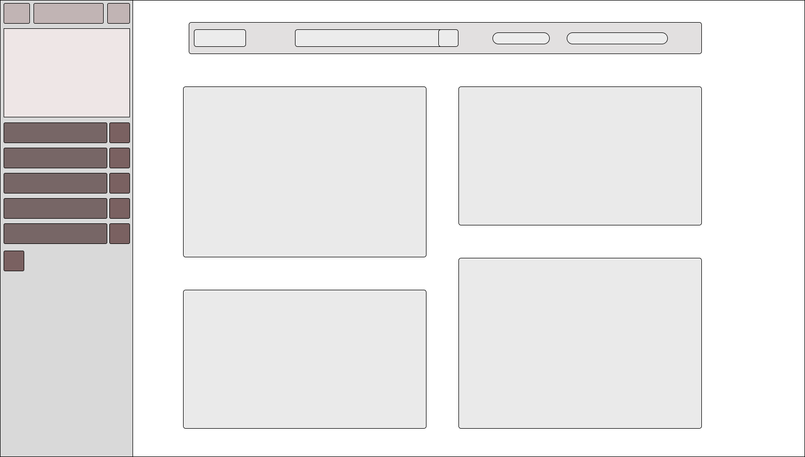

About Wireframes
We’re going to learn what a wireframe is and how ours look.Simply a wireframe is a simplified mockup of a UI or Webpage, it uses the most basic shapes to create a rough look of the website.
After having a low fidelity wireframe, we can move up and create a high-fidelity wireframe. The high-fidelity wireframe is fundamentally similar to the low fi, but has some differences.
With the high-fidelity wireframe clickable buttons, colors, and a real representation of how the application/UI should look like. A good high fi wireframe will make people question if the wireframe is just a mockup or the actual product.
Wireframe for current page

Homepage mockup
First mockup for content

Second mockup for content